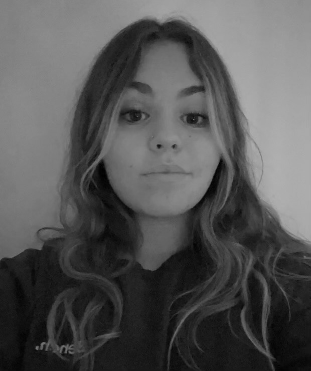

About Me
In the summer of 2023, I still wasn’t sure which path to pursue at Algonquin College, There were so many different programs. I decided to take a Program called Design Foundations to explore my options and find my passion. After spending the year in the program, I have found an interest in Algonquin’s Graphic Design Program. I have always been interested in various forms of art and design. Being a student at this school has allowed me the chance to explore my passion while finding ways to create a future with my learning.
I understand the important basic Software that the school uses to create work such as Adobe Illustrator, Photoshop, Indesign and many more. My work was created by hand first then I was able to enhance it using different types of technology. My capability is not limited by technology because I have incorporated a phone Tablet, and Macbook to create appealing final projects. Even if I work with my peers or by myself, I have always been able to meet the expectations. I have been able to create various design projects with a team. My love for design has always allowed me to work harder towards my goals and projects. With the chance to further my education in design, I know that my creativity and perseverance can help bring a new perspective to Graphic design.
“The time is always right to do what is right.”
- Martin Luther King, Jr.
My skills
- fluent in English and French
- Team Working skills
- software skills such as illustrator,photoshop,etc
graphic Design class
- Graphic Design
- Greek Mythology
- Computer Graphics
- Concept sketching
- Web Design
- Communications
- Typographyc